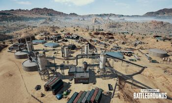

Miramar
Miramar:
Miramar es el segundo mapa jugable del videojuego PlayerUnknown's
Battlegrounds. Tiene temática mexicana y posee algunos puntos de interés.
Las áreas que se consideran de gran popularidad tienden a tener más
interacciones con los jugadores, con la ventaja de contar con equipos
de mayor calidad y un acceso potencialmente más fácil a los vehículos.
Los jugadores más nuevos pueden querer enfocarse en áreas de baja popularidad;
aunque la calidad del equipo es menor, les permite adaptarse al terreno y tener
una idea del juego.
Zonas
Chumacera

Chumacera es una zona de Miramar en PlayerUnknown's Battlegrounds.
Cruz del Valle
Cruz del Valle es una zona de Miramar en PlayerUnknown's Battlegrounds.
El Azahar
El Azahar es una zona de Miramar en PlayerUnknown's Battlegrounds.